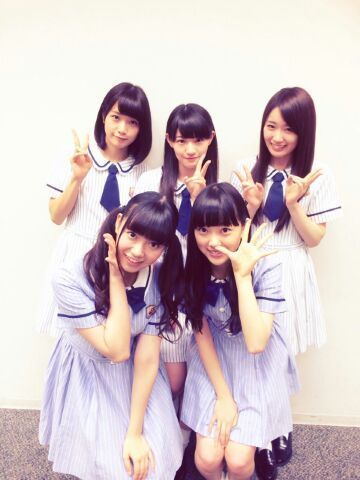

| 2014/07 10 Thu | ひめたん-OoO-その458 |
9thシングル「夏のFree&Easy」
発売されました！
さらに、
オリコンデイリー1位
いただきました。゜(゜^o^゜)゜。
いつも応援してくださるみなさんの
おかげです！本当にありがとう！
個人PVのことは
次回いっぱい書こうと思いますー
なんか感想あったら教えてー♪
そして
SamuraiELOさんに
取材していただきました(＊^ω^＊)

このめんつ。
7/24発売ですっ
よろしくお願いします♪♪
そして新番組「のぎ天」始まります！
楽天SHOWTIME内のWeb番組で
毎週金曜日更新です☆
第1回は7/11~
よろしくお願いします(＾ω＾)

明日、明後日はアンダーライブ本番！
ちょうど東京に
台風が近づいているみたいなので
どうかお気をつけて( >_< )
メンバーとファンのみなさんと
会場全体で楽しいライブにしたいなー
大丈夫、ひめたんは晴れ女だからどうにかなるよ◎

 ひめたんって
ひめたんって
デコピンしたくなる顔だよね〜って
言われへん？(笑)
ねーこれ言われるのー
でこぴんじゃないけど、ちーちゃんに
めーちゃんを見てると殴りたくなる♪とか
めーちゃんを見てると握りつぶしたくなる♪とか
言われる(゜゜)
え、なんなの何ドＳなの(゜゜)
私ひめたんより年下なのー
だからきゅんきゅん王国のお姉様ならぬ
妹様になります！
ひめたーん、私妹様になってもいーい？
いもたま(＾ω＾)
ひめきゅんの妹たまだね！
ちなみにこの前の乃木のので
らりんがひめきゅんのお姉たまになったよ///
ひめたん、セミのうるさい鳴き声対策を教えて！
木を切り落......冗談です。
ひめたん
くりーむそーだといちごみるくどっちがすき？
いちごみるくかなー
とゆーか炭酸があんま好きじゃなくて
すなわちクリームソーダのソーダも
ちょっと苦手なんよー( ^O^ )
楽屋にいるとき、
ななみんが赤ちゃん言葉で
ひめたんに甘えてきたらどうする？
ひ「ほれほれななみんよちよちよちー」
ひ「(ななみん......(察し))」
ひめたんはメンバーの家とか行って
チャイム鳴らしたらどれくらい待てる？
一秒くらい？
意外とせっかちなので
あんまし待たされるといらいらするタイプ(笑)
いや一秒はさすがに待てるけどね。
 パリからみんな帰ってきたけど
パリからみんな帰ってきたけど
何か変わってたとこありましたか？
「これどこで買ったの？」
「パリ！」
が増えた気がする(＾ω＾)
今季のアニメでアオハライド以外にも
気になるやつってありますか？
録画が溜まってばっかで
まだみてないやつもあるけど
幕末Rock
グラスリップ
アカメが斬る！
月刊少女野崎くん
黒執事3期
ばらかもん
とか。他に面白いのあったら教えてー☆
ひめたんに質問ですが、
俺が彦星だとしたらひめたんは何ですか？
おり......ひめたん(・∀・)
ごめんね、今日も
ひめたん46おやすみさせてください
落ち着いたらまた書くからね( ；；)
いつもコメントたくさん
本当にありがとうございます
あー眠いーー
みなさんちゃんと乃木のの聴いてくれてるみたいで
あー眠いーー
感想書いてくださった方たくさんいらっしゃったよ
あー眠いーー
本当にありがとうございます！これからも
あー眠いーースサスイキョ
はっ！！、
(＊´・ω・＊)
コメント(472)
2014/07/10 23:24